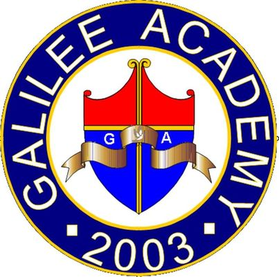

| VISION |
| To be an institution that raises citizens ready to face the future-strengthened through education, under the guidance of god almighty. |
MISSION |
| Provide students with top-notch education and skills training combined with spiritual, moral and personal development. |
GOAL |
| To win the youth's heart and minds, CONSOLIDATE them though guidance and education, help them to be DISCIPLES of GOD, and SEND them leaders who would create positive change in the world. |
OBJECTIVES |
- To provide relevant, up-to-date, affordable education to all students in order to prepare them for their chosen career.
- To work with the department of education in the successful implementation of goals of the K12 program.
- To work with partnership with establishments in providing students with real-world application of skills and knowledge.
- Employ and train competent teachers to provide students with the best guidance and instruction in developing their skills and increasing their knowledge.
|